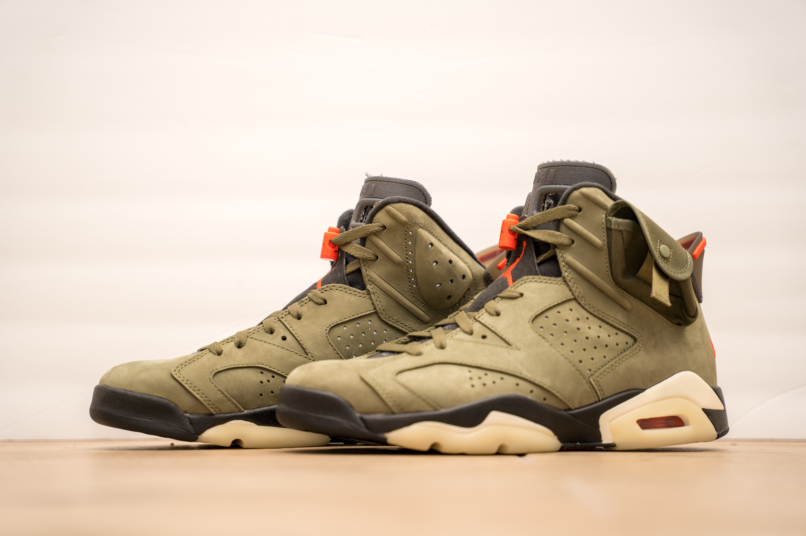

Working with suppliers and distributors to negotiate prices and order large volumes.
Collaborate with executives, marketers and salespeople to set prices that are good for the market and profit.
Getting to know the customer base and understanding their motivation and sales drivers.
Reviewing customer feedback to predict sales trends and seasonal stock demand.
Briefing staff on stock display and rotation to ensure every space is optimized.
Researching and monitoring industry trends and consumer behavior to anticipate demand and changes in buying patterns.
Making predictions based on sales data, customer feedback and market trends.
Assessing the effectiveness of different product displays and store layouts on sales figures.
Reviewing competitors, including pricing, profit, marketing and other progress.
